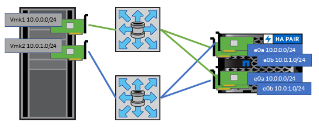
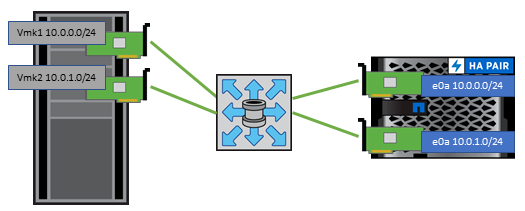

Microsoft SQL Server
Microsoft SQL Server
Network configuration
 Suggest changes
Suggest changes
Configuring network settings when using vSphere with systems running ONTAP software is straightforward and similar to other network configuration.
Here are some things to consider:
-
Separate storage network traffic from other networks. A separate network can be achieved by using a dedicated VLAN or separate switches for storage. If the storage network shares physical paths such as uplinks, you might need QoS or additional uplink ports to make sure of sufficient bandwidth. Don't connect hosts directly to storage; use switches to have redundant paths and allow VMware HA to work without intervention. See Direct connect networking for additional information.
-
Jumbo frames can be used if desired and supported by your network, especially when using iSCSI. If they are used, make sure they are configured identically on all network devices, VLANs, and so on in the path between storage and the ESXi host. Otherwise, you might see performance or connection problems. The MTU must also be set identically on the ESXi virtual switch, the VMkernel port, and also on the physical ports or interface groups of each ONTAP node.
-
NetApp only recommends disabling network flow control on the cluster network ports within an ONTAP cluster. NetApp makes no other recommendations for best practices for the remaining network ports used for data traffic. You should enable or disable as necessary. See TR-4182 for more background on flow control.
-
When ESXi and ONTAP storage arrays are connected to Ethernet storage networks, NetApp recommends configuring the Ethernet ports to which these systems connect as Rapid Spanning Tree Protocol (RSTP) edge ports or by using the Cisco PortFast feature. NetApp recommends enabling the Spanning-Tree PortFast trunk feature in environments that use the Cisco PortFast feature and that have 802.1Q VLAN trunking enabled to either the ESXi server or the ONTAP storage arrays.
-
NetApp recommends the following best practices for link aggregation:
-
Use switches that support link aggregation of ports on two separate switch chassis using a multichassis link aggregation group approach such as Cisco's Virtual PortChannel (vPC).
-
Disable LACP for switch ports connected to ESXi unless you are using dvSwitches 5.1 or later with LACP configured.
-
Use LACP to create link aggregates for ONTAP storage systems with dynamic multimode interface groups with IP hash.
-
Use an IP hash teaming policy on ESXi.
-
The following table provides a summary of network configuration items and indicates where the settings are applied.
| Item | ESXi | Switch | Node | SVM |
|---|---|---|---|---|
IP address |
VMkernel |
No** |
No** |
Yes |
Link aggregation |
Virtual switch |
Yes |
Yes |
No* |
VLAN |
VMkernel and VM port groups |
Yes |
Yes |
No* |
Flow control |
NIC |
Yes |
Yes |
No* |
Spanning tree |
No |
Yes |
No |
No |
MTU (for jumbo frames) |
Virtual switch and VMkernel port (9000) |
Yes (set to max) |
Yes (9000) |
No* |
Failover groups |
No |
No |
Yes (create) |
Yes (select) |
*SVM LIFs connect to ports, interface groups, or VLAN interfaces that have VLAN, MTU, and other settings. However, the settings are not managed at the SVM level.
**These devices have IP addresses of their own for management, but these addresses are not used in the context of ESXi storage networking.
SAN (FC, FCoE, NVMe/FC, iSCSI), RDM
In vSphere, there are three ways to use block storage LUNs:
-
With VMFS datastores
-
With raw device mapping (RDM)
-
As a LUN accessed and controlled by a software initiator from a VM guest OS
VMFS is a high-performance clustered file system that provides datastores that are shared storage pools. VMFS datastores can be configured with LUNs that are accessed using FC, iSCSI, FCoE, or NVMe namespaces accessed by the NVMe/FC protocol. VMFS allows traditional LUNs to be accessed simultaneously by every ESX server in a cluster. The ONTAP maximum LUN size is generally 16TB; therefore, a maximum-size VMFS 5 datastore of 64TB (see the first table in this section) is created by using four 16TB LUNs (All SAN Array systems support the maximum VMFS LUN size of 64TB). Because the ONTAP LUN architecture does not have small individual queue depths, VMFS datastores in ONTAP can scale to a greater degree than with traditional array architectures in a relatively simple manner.
vSphere includes built-in support for multiple paths to storage devices, referred to as native multipathing (NMP). NMP can detect the type of storage for supported storage systems and automatically configures the NMP stack to support the capabilities of the storage system in use.
Both NMP and NetApp ONTAP support Asymmetric Logical Unit Access (ALUA) to negotiate optimized and nonoptimized paths. In ONTAP, an ALUA-optimized path follows a direct data path, using a target port on the node that hosts the LUN being accessed. ALUA is turned on by default in both vSphere and ONTAP. The NMP recognizes the ONTAP cluster as ALUA, and it uses the ALUA storage array type plug-in (VMW_SATP_ALUA) and selects the round robin path selection plug-in (VMW_PSP_RR).
ESXi 6 supports up to 256 LUNs and up to 1,024 total paths to LUNs. Any LUNs or paths beyond these limits are not seen by ESXi. Assuming the maximum number of LUNs, the path limit allows four paths per LUN. In a larger ONTAP cluster, it is possible to reach the path limit before the LUN limit. To address this limitation, ONTAP supports selective LUN map (SLM) in release 8.3 and later.
SLM limits the nodes that advertise paths to a given LUN. It is a NetApp best practice to have at least one LIF per node per SVM and to use SLM to limit the paths advertised to the node hosting the LUN and its HA partner. Although other paths exist, they aren't advertised by default. It is possible to modify the paths advertised with the add and remove reporting node arguments within SLM. Note that LUNs created in releases prior to 8.3 advertise all paths and need to be modified to only advertise the paths to the hosting HA pair. For more information about SLM, review section 5.9 of TR-4080. The previous method of portsets can also be used to further reduce the available paths for a LUN. Portsets help by reducing the number of visible paths through which initiators in an igroup can see LUNs.
-
SLM is enabled by default. Unless you are using portsets, no additional configuration is required.
-
For LUNs created prior to Data ONTAP 8.3, manually apply SLM by running the
lun mapping remove-reporting-nodescommand to remove the LUN reporting nodes and restrict LUN access to the LUN-owning node and its HA partner.
Block protocols (iSCSI, FC, and FCoE) access LUNs by using LUN IDs and serial numbers, along with unique names. FC and FCoE use worldwide names (WWNNs and WWPNs), and iSCSI uses iSCSI qualified names (IQNs). The path to LUNs inside the storage is meaningless to the block protocols and is not presented anywhere in the protocol. Therefore, a volume that contains only LUNs does not need to be internally mounted at all, and a junction path is not needed for volumes that contain LUNs used in datastores. The NVMe subsystem in ONTAP works similarly.
Other best practices to consider:
-
Make sure that a logical interface (LIF) is created for each SVM on each node in the ONTAP cluster for maximum availability and mobility. ONTAP SAN best practice is to use two physical ports and LIFs per node, one for each fabric. ALUA is used to parse paths and identify active optimized (direct) paths versus active nonoptimized paths. ALUA is used for FC, FCoE, and iSCSI.
-
For iSCSI networks, use multiple VMkernel network interfaces on different network subnets with NIC teaming when multiple virtual switches are present. You can also use multiple physical NICs connected to multiple physical switches to provide HA and increased throughput. The following figure provides an example of multipath connectivity. In ONTAP, configure either a single-mode interface group for failover with two or more links that are connected to two or more switches, or use LACP or other link-aggregation technology with multimode interface groups to provide HA and the benefits of link aggregation.
-
If the Challenge-Handshake Authentication Protocol (CHAP) is used in ESXi for target authentication, it must also be configured in ONTAP using the CLI (
vserver iscsi security create) or with System Manager (edit Initiator Security under Storage > SVMs > SVM Settings > Protocols > iSCSI). -
Use ONTAP tools for VMware vSphere to create and manage LUNs and igroups. The plug-in automatically determines the WWPNs of servers and creates appropriate igroups. It also configures LUNs according to best practices and maps them to the correct igroups.
-
Use RDMs with care because they can be more difficult to manage, and they also use paths, which are limited as described earlier. ONTAP LUNs support both physical and virtual compatibility mode RDMs.
-
For more on using NVMe/FC with vSphere 7.0, see this ONTAP NVMe/FC Host Configuration guide and TR-4684.The following figure depicts multipath connectivity from a vSphere host to an ONTAP LUN.

NFS
vSphere allows customers to use enterprise-class NFS arrays to provide concurrent access to datastores to all the nodes in an ESXi cluster. As mentioned in the datastore section, there are some ease of use and storage efficiency visibility benefits when using NFS with vSphere.
The following best practices are recommended when using ONTAP NFS with vSphere:
-
Use a single logical interface (LIF) for each SVM on each node in the ONTAP cluster. Past recommendations of a LIF per datastore are no longer necessary. While direct access (LIF and datastore on same node) is best, don't worry about indirect access because the performance effect is generally minimal (microseconds).
-
All versions of VMware vSphere that are currently supported can use both NFS v3 and v4.1. Official support for nconnect was added to vSphere 8.0 update 2 for NFS v3. For NFS v4.1, vSphere continues to support session trunking, Kerberos authentication, and Kerberos authentication with integrity. It's important to note that session trunking requires ONTAP 9.14.1 or a later version.
It's worth noting that NFSv3 and NFSv4.1 use different locking mechanisms. NFSv3 uses client-side locking, while NFSv4.1 uses server-side locking. Although an ONTAP volume can be exported through both protocols, ESXi can only mount a datastore through one protocol. However, this doesn't mean that other ESXi hosts cannot mount the same datastore through a different version. To avoid any issues, it's essential to specify the protocol version to use when mounting, ensuring that all hosts use the same version and, therefore, the same locking style. It's critical to avoid mixing NFS versions across hosts. If possible, use host profiles to check compliance.
Because there is no automatic datastore conversion between NFSv3 and NFSv4.1, create a new NFSv4.1 datastore and use Storage vMotion to migrate VMs to the new datastore.
Please refer to the NFS v4.1 Interoperability table notes in the NetApp Interoperability Matrix tool for specific ESXi patch levels required for support.
* NFS export policies are used to control access by vSphere hosts. You can use one policy with multiple volumes (datastores). With NFSv3, ESXi uses the sys (UNIX) security style and requires the root mount option to execute VMs. In ONTAP, this option is referred to as superuser, and when the superuser option is used, it is not necessary to specify the anonymous user ID. Note that export policy rules with different values for -anon and -allow-suid can cause SVM discovery problems with the ONTAP tools. Here's a sample policy:
Access Protocol: nfs3
Client Match Spec: 192.168.42.21
RO Access Rule: sys
RW Access Rule: sys
Anonymous UID
Superuser: sys
* If the NetApp NFS Plug-In for VMware VAAI is used, the protocol should be set as nfs when the export policy rule is created or modified. The NFSv4 protocol is required for VAAI copy offload to work, and specifying the protocol as nfs automatically includes both the NFSv3 and the NFSv4 versions.
* NFS datastore volumes are junctioned from the root volume of the SVM; therefore, ESXi must also have access to the root volume to navigate and mount datastore volumes. The export policy for the root volume, and for any other volumes in which the datastore volume's junction is nested, must include a rule or rules for the ESXi servers granting them read-only access. Here's a sample policy for the root volume, also using the VAAI plug-in:
Access Protocol: nfs (which includes both nfs3 and nfs4)
Client Match Spec: 192.168.42.21
RO Access Rule: sys
RW Access Rule: never (best security for root volume)
Anonymous UID
Superuser: sys (also required for root volume with VAAI)
* Use ONTAP tools for VMware vSphere (the most important best practice):
Use ONTAP tools for VMware vSphere to provision datastores because it simplifies management of export policies automatically.
When creating datastores for VMware clusters with the plug-in, select the cluster rather than a single ESX server. This choice triggers it to automatically mount the datastore to all hosts in the cluster.
Use the plug- in mount function to apply existing datastores to new servers.
When not using ONTAP tools for VMware vSphere, use a single export policy for all servers or for each cluster of servers where additional access control is needed.
* Although ONTAP offers a flexible volume namespace structure to arrange volumes in a tree using junctions, this approach has no value for vSphere. It creates a directory for each VM at the root of the datastore, regardless of the namespace hierarchy of the storage. Thus, the best practice is to simply mount the junction path for volumes for vSphere at the root volume of the SVM, which is how ONTAP tools for VMware vSphere provisions datastores. Not having nested junction paths also means that no volume is dependent on any volume other than the root volume and that taking a volume offline or destroying it, even intentionally, does not affect the path to other volumes.
* A block size of 4K is fine for NTFS partitions on NFS datastores. The following figure depicts connectivity from a vSphere host to an ONTAP NFS datastore.

The following table lists NFS versions and supported features.
| vSphere Features | NFSv3 | NFSv4.1 |
|---|---|---|
vMotion and Storage vMotion |
Yes |
Yes |
High availability |
Yes |
Yes |
Fault tolerance |
Yes |
Yes |
DRS |
Yes |
Yes |
Host profiles |
Yes |
Yes |
Storage DRS |
Yes |
No |
Storage I/O control |
Yes |
No |
SRM |
Yes |
No |
Virtual volumes |
Yes |
No |
Hardware acceleration (VAAI) |
Yes |
Yes |
Kerberos authentication |
No |
Yes (enhanced with vSphere 6.5 and later to support AES, krb5i) |
Multipathing support |
No |
Yes (ONTAP 9.14.1) |
Direct connect networking
Storage administrators sometimes prefer to simplify their infrastructures by removing network switches from the configuration. This can be supported in some scenarios.
iSCSI and NVMe/TCP
A host using iSCSI or NVMe/TCP can be directly connected to a storage system and operate normally. The reason is pathing. Direct connections to two different storage controllers results in two independent paths for data flow. The loss of path, port, or controller does not prevent the other path from being used.
NFS
Direct-connected NFS storage can be used, but with a significant limitation - failover will not work without a significant scripting effort, which would be the responsibility of the customer.
The reason nondisruptive failover is complicated with direct-connected NFS storage is the routing that occurs on the local OS. For example, assume a host has an IP address of 192.168.1.1/24 and is directly connected to an ONTAP controller with an IP address of 192.168.1.50/24. During failover, that 192.168.1.50 address can fail over to the other controller, and it will be available to the host, but how does the host detect its presence? The original 192.168.1.1 address still exists on the host NIC that no longer connects to an operational system. Traffic destined for 192.168.1.50 would continue to be sent to an inoperable network port.
The second OS NIC could be configured as 19 2.168.1.2 and would be capable of communicating with the failed over 192.168.1.50 address, but the local routing tables would have a default of using one and only one address to communicate with the 192.168.1.0/24 subnet. A sysadmin could create a scripting framework that would detect a failed network connection and alter the local routing tables or bring interfaces up and down. The exact procedure would depend on the OS in use.
In practice, NetApp customers do have direct-connected NFS, but normally only for workloads where IO pauses during failovers are acceptable. When hard mounts are used, there should not be any IO errors during such pauses. The IO should hang until services are restored, either by a failback or manual intervention to move IP addresses between NICs on the host.
FC Direct Connect
It is not possible to directly connect a host to an ONTAP storage system using the FC protocol. The reason is the use of NPIV. The WWN that identifies an ONTAP FC port to the FC network uses a type of virtualization called NPIV. Any device connected to an ONTAP system must be able to recognize an NPIV WWN. There are no current HBA vendors who offer an HBA that can be installed in a host that would be able to support an NPIV target.